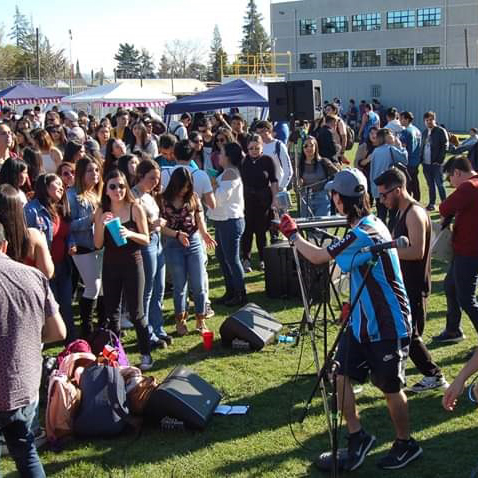
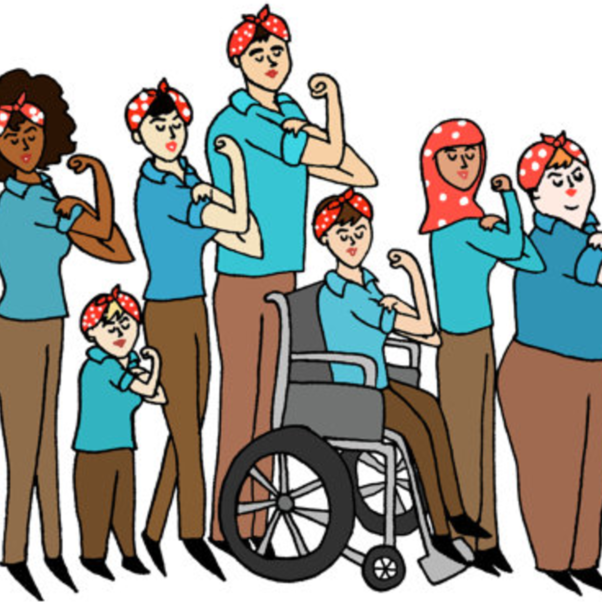
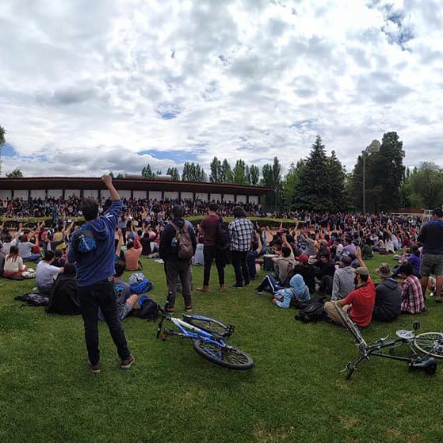
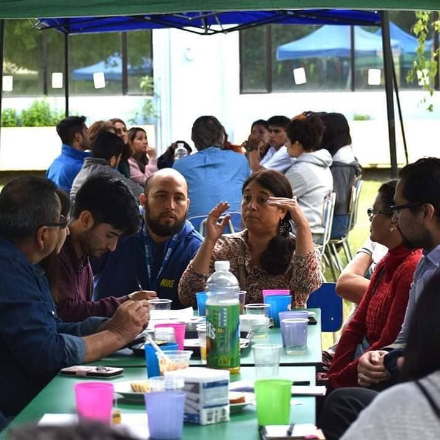

Participación vinculante
Garantizar la democracia, la cual se relaciona con el ejercicio
de la multi
estamentalidad y la participación en instancias de decisión por parte de todos los estamentos.
Este es uno de los objetivos fundamentales que debe perseguir un nuevo Sistema de Educación
Superior y una nueva Organización Estudiantil de la Universidad Católica del Maule.

Intersectorialidad
Es central el diálogo y la co-construcción entre los distintos
elementos que
conforman la realidad de la vida social, debiendo trabajar y proyectarse en conjunto, para así
fomentar y proyectar objetivos a mediano y largo plazo de construcción, conjuntamente con lo que
entendemos por vida universitaria involucrada en sus comunidades en pos del desarrollo integral
de toda la comunidad estudiantil.
Transparencia
La información y el diálogo no deben limitarse solo a los
espacios de
discusión, sino que además, se deben aprovechar al máximo los distintos canales a disposición,
sobre todo en épocas en donde la virtualidad ha llegado a nuestras vidas, con la finalidad de
mantener a una comunidad informada, entablar un lazo de confiabilidad de esta con el
estudiantado.

Vinculación social
Vincularse socialmente con las comunidades territoriales imprime
dos objetivos
centrales, los que guardan relación con la necesidad de rearticulación, solidaridad y unión del
tejido social y de construcción de saberes colectivos, los cuales tributan a la valoración del
sincretismo cultural.

Fortalecer y direccionar
No basta solo con estar informados, se necesita brindar
protagonismo para que
los, las y les estudiantes puedan desarrollar y fomentar el pensamiento crítico en pos de
generar verdadera participación vinculante, lo que implica: que las decisiones sean tomadas en
conjunto; un verdadero sentido de la democratización; transparencia y fiscalización de la
comunidad, lo que supone compartir y construir un proyecto co-construido.

Reforzar la instancia multi-estamental
La Universidad es un producto social que constituye a la
reproducción cultural
de una sociedad en un tiempo-espacio determinado y en ella reside su diversidad. Constituye un
subsistema social, es dinámica y cambiante e interactúa permanentemente con el medio interno y
externo.